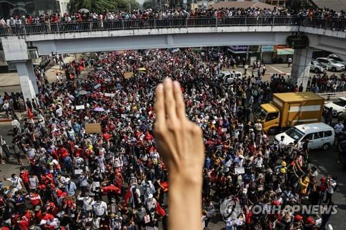
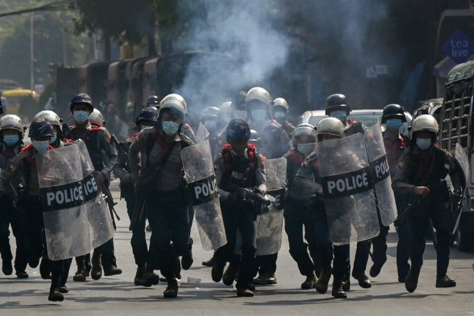
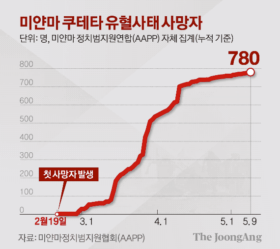

미얀마 쿠테타
미얀마 쿠테타
미얀마 쿠테타
미얀마의 쿠데타 이유 2021년 발생한 미얀마 쿠데타 이유는 2015년 치러진 총선에서도 아웅산 수치가 이끄는 당이 상원과 하원 모두에서 다수당의 지위를 차지하는데 성공하여 민주주의를 굳히는 것처럼 보였지만 총선 결과에 반발한 군부가 민 아웅 흘라잉을 중심으로 결국 2021년 2월 1일 쿠데타를 일으켰습니다.
미얀마 인권 2009년11월에는 유엔 총회에서 군부에게 인권을 존중할 것 그리고 폭력을 멈출 것을 요구하였으며 국제법상의 인권을 충실하게 지킬 것을 당부하였습니다. 미얀마는 쿠데타로 인한 시위대 유혈 진압과 더불어 강제 노동,인신 매매,아동 노동,등이 상당히 만연해 있으며 소수민족들에 대한 탄압도 적지 않게 일어나고 있습니다.
미얀마 쿠데타 전망 미얀마 민주화 운동의 경우 군부의 강력한 탄압으로 실패할 것 처럼 보였지만 조금씩 반전이 일어나고 있습니다. 미얀마는 다른 동남아의 국가들과는 다르게 미얀마 군부에 맞설만한 무력을 가진 세력을 어느 정도 가지고 있는데요. 미얀마의 소수민족 반군세력들의 경우 민주주의 정부와 아웅산 수치를 지지하는 경향이 강하고 그들을 멸망시키려는 군부에 대한 반감이 깊다고 합니다. 지난 23일에는 카친 독립군이 미얀마군 기지 10곳을 점령하고 미얀마군 1개 대대를 괴멸시키는 등 활약을 이어가고 있습니다.
HISTORY(역사)
01/12/11 미얀마쿠테타역사
.미얀마 역사
미얀마 연방공화국은 동남아시아의 국가입니다. 미얀마는 동남아시아 본토내에서 가장 면적이 큰 국가이다. 미얀마의 수도는 네피도이고 최대 도시는 양곤입니다.
9세기경 현재 미얀마의 주류를 이루는 민족인 버마족이 들어오게 되면서 버간 왕국을 세웠고 점차적으로 세력을 넓혀 나갔다고 한다. 몽골족의 침입으로 인해 멸망하고 말았습니다.
영국과의 전쟁에서 패배한 이후 영국 동인도회사에 국권을 침탈당하기 시작했으며 영국의 식민지로 전락하였습니다.
2차 세계 대전- 일본 제국의 침략을 받아 지배를 받았음
연합국에 의해 해방되어 1948년 독립을 쟁취했지만 1962년 군사 쿠데타가 일어나 버마 사회주의 연방공화국의 독재가 시작되게 됩니다.